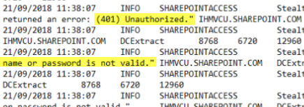
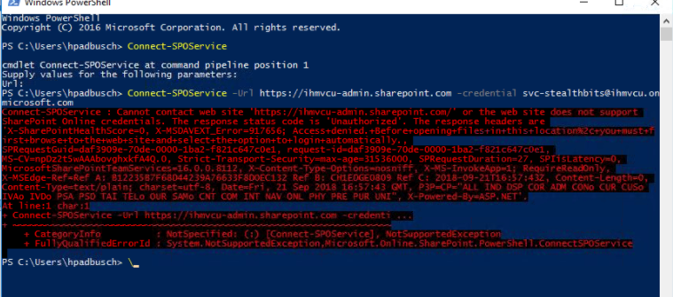

Summary: Despite having the proper credentials SharePoint online scans failing to connect with errors related to having 'No credentials to favour for the host".
Issue:
Even with having Global administrator privileges, SPO scans were still failing with
401 unauthorized errors:
"Unable to negotiate http connection via http://company.sharepoint.com/
due to error: The remote server returned an error: (401) Unauthorized. "
"Unable to negotiate admin connection via https://company.sharepoint.com due to error: The user's login name or password is not valid. "

The first step in diagnosing this issue is to try and connect to the admin tenant
using PowerShell. This will require the SharePoint Online Management Shell with the
powershell commandlets available. Simply running the Connect-SPOService command (with
SA service account) should show a similar error to that received in StealthAUDIT

This is most likely due to the fact that the LegacyAuthProtocalsEnabled parameter is
set to false, which prohibits connection from third parties to SharePoint
Online.
A value of True- Enables Office clients using non-modern authentication protocols (such as,
Forms-Based Authentication (FBA) or Identity Client Runtime Library (IDCRL)) to access
SharePoint resources.
A value of False-Prevents Office clients using non-modern authentication protocols from accessing
SharePoint Online resources. Additionally, a value of False prevents 3rd
party applications (including CSOM queries that StealthAUDIT leverages) from
authenticating to SharePoint Online.
Instructions:
Once you've run the PowerShell script and produced the aforementioned error, restart
powerShell and leverage credentials with Global Admin privileges to update the
LegacyAuthProtocolsEnabled parameter to True.
The customer may not have the SharePoint Online module installed for powershell,
this can be achieved by running the following command:
Install-Module -Name Microsoft.Online.SharePoint.PowerShell
Once you have the SPO module installed run the following command to attempt
connection to SharePoint Online
Connect-SPOService
You will be prompted to enter the URL to connect to, this needs to be the -admin url
which is what StealthAUDIT connects to. It should look something like
https://CompanyName-admin.SharePoint.com.To check for the current value of the LegacyAuthProtocolsEnabled parameter, run:
Get-SPOTenant
If this is set to false, you must set it to true by running the following
commands
Set-SPOTenant -LegacyAuthProtocolsEnabled $True
After you run these commands check that the changes were made by typing: Get-SPOTenant and
look for LegacyAuthProtocolsEnable : TrueThese are the settings you want to see after running SPOTenant:
Note: When we used this troubleshooting method with a customer the changes took 24 hours to be respected. Online articles suggest it can take up to 48 hours for the changes to be respected in some cases.
Product:
StealthAUDIT
Module: SA
- Solution Set - SharePoint
Versions:
8.0+
Salesforce Article ID:
2106